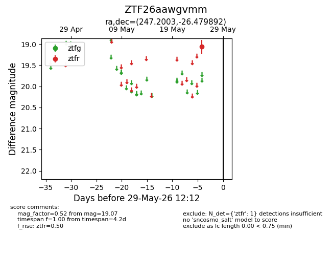
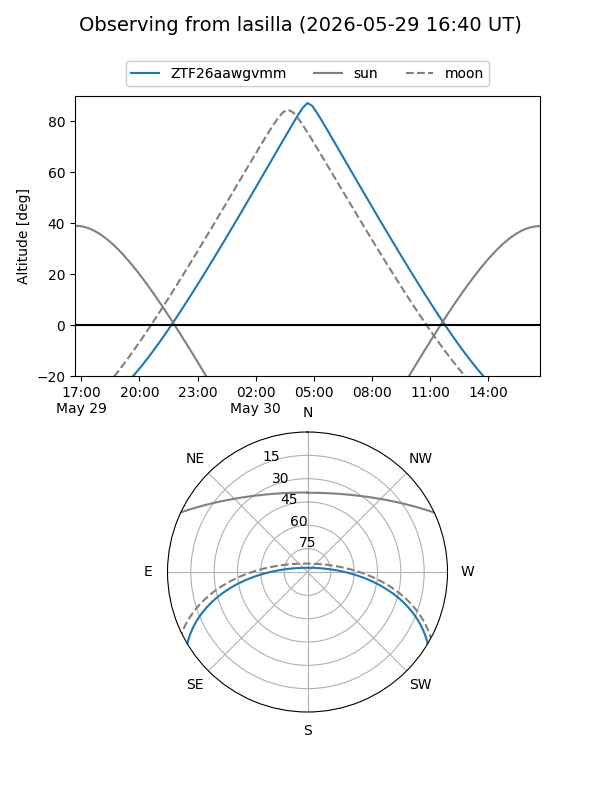
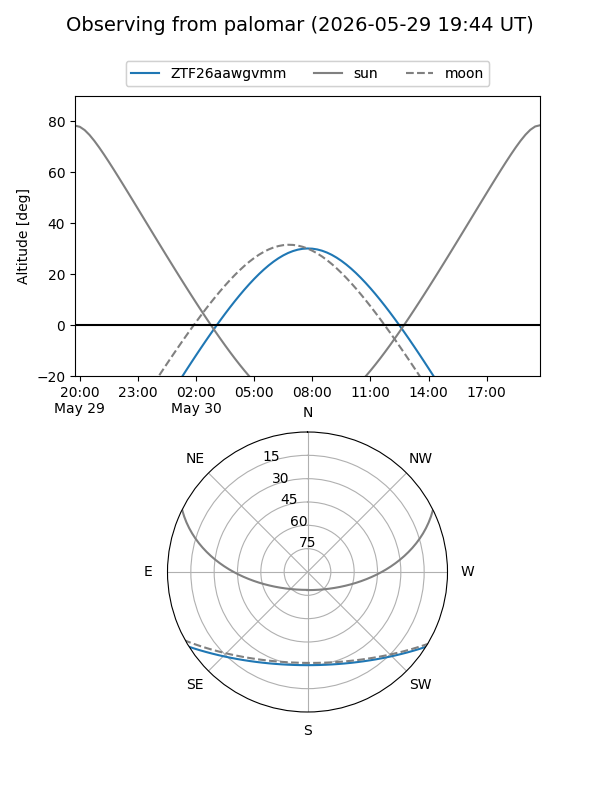

ZTF26aawgvmm
Target ZTF26aawgvmm at 2026-05-29 12:16
Aliases and brokers:
lsst-FINK: link
lsst-Lasair: link
lsst-ALeRCE: link
ztf-FINK: link
ztf-Lasair: link
ztf-ALeRCE: link
alt names
ZTF26aawgvmm (ztf,fink_ztf)
Coordinates:
equatorial (ra, dec) = 247.2003,-26.47989
equatorial (HMS+DMS) = 16:28:48.07,-26:28:47.61
galactic (l, b) = (351.8169,+15.13440)
Flags:
Photometry:
last ztfr=19.07
1 ztfr detections
Lightcurve

Visibility


Additional plots